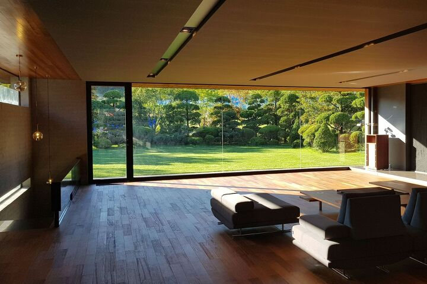
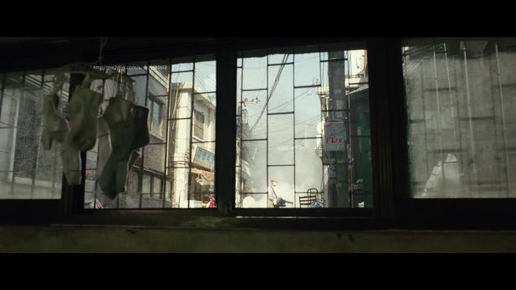
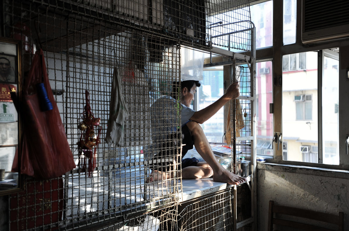

Social
Impact
Social Problems:
‘Parasite’ is a movie that uses various cinematic tools (smells, way of thinking, planning of life, water, etc.) to distinguish between upper class and lower class in our society. And ‘sunlight’ is one of the tools that director Bong utilized to show class struggles.
With the great location of a beautiful designer mansion, an upper class family in the movie often gather in the living room to fully embrace sunlight.

On the other hand, a semi-basement is a house that a protagonist’s family lives in. In the first scene of the movie, old socks hanging by the window are receiving sunlight coming down from the ground. The window is at the highest position in the semi-basement. Placed on the side of the road, the noise of the street comes in without a filter. The family always has to raise one’s head to look up to see the world outside.
Now in the cities, as the population grows, buildings are built higher to contain people on a larger scale. And the amount of sunlight in rooms at the buildings can have become one of the key features that decides the price of the real estate. Natural light is commodified in modern society. Consequently, we can see that owning sunlight in a personal space is another form of power in Capitalism.
Designied by Karin Song.
Email (at) songy703@newschool.edu